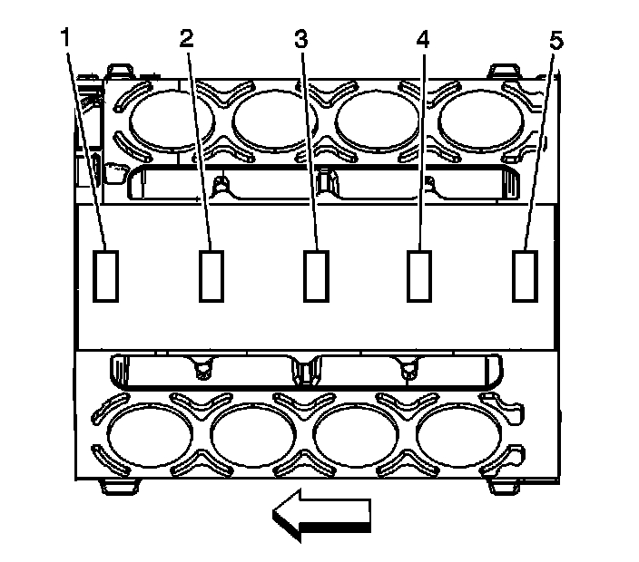
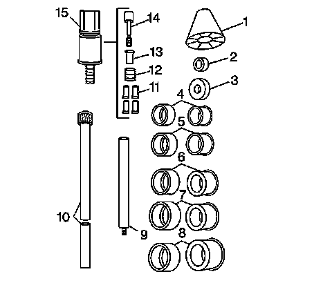
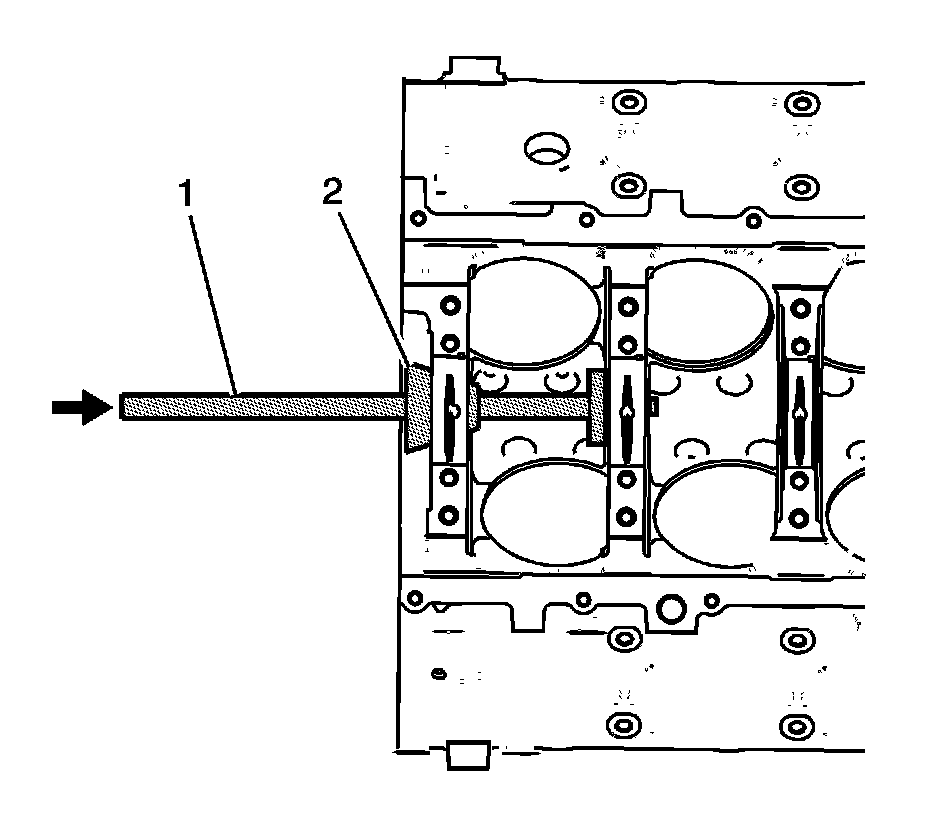
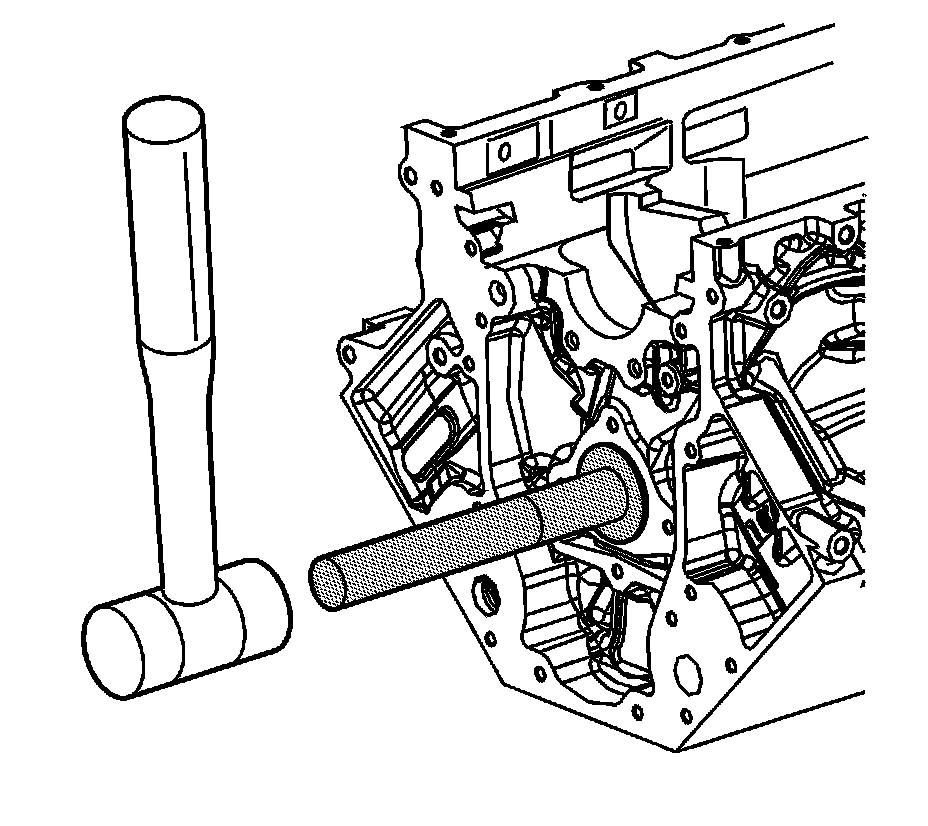

42. Camshaft Bearing Installation
Camshaft Bearing Installation
Tools Required
J 33049 Camshaft Bearing Service Set

Important: The engine block camshaft bearing bores are machined for 3 different outside diameter (OD) size bearings. Position 1 and 5 are the largest diameter bores. Position 3 is the smallest diameter bore. Position 2 and 4 are the intermediate size bores. The inside diameter (ID) for all camshaft bearings is the same size.
1. Measure the engine block camshaft bearing bores (1-5) in order to identify the correct OD size bearing for each position. Refer to Engine Mechanical Specifications.

2. Select the expanding driver (4-8) and washer (2 or 3) from the J 33049. Refer to Piston and Connecting Rod Assemble.
3. Assemble the tool.

4. Insert the tool (1) through the front of the engine block and into the bearing.
5. Tighten the expander assembly nut until snug.
6. Push the guide cone (2) into the front camshaft bearing in order to align the tool.
7. Drive the bearing into the block bore.

8. Install the front and rear bearings to the block.